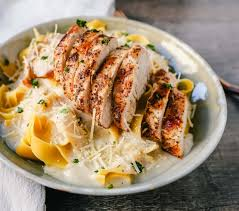

Chicken alfredo

Description.
This is a classic Italian-inspired dish known for its creamy and indulgent flavor. You can customize it by adding vegetables or using different types of pasta to suit your preferences.
ingredients:
- 2 boneless, skinless chicken breasts
- 8 ounces fettuccine pasta
- 2 tablespoons butter
- 2 cloves garlic, minced
- 1 cup heavy cream
- 1 cup grated Parmesan cheese
- Salt and pepper to taste
- Fresh parsley for garnish
Steps:
- Season the chicken breasts with salt and pepper. In a large skillet, cook the chicken over medium heat until no longer pink in the center (about 6-7 minutes per side). Remove from the skillet and let it rest for a few minutes before slicing it into thin strips.
- Cook the fettuccine pasta according to the package instructions. Drain and set aside.
- In the same skillet, melt the butter over medium heat. Add minced garlic and cook for about 1 minute until fragrant.
- Pour in the heavy cream and bring it to a simmer. Reduce the heat and stir in the grated Parmesan cheese. Continue stirring until the sauce thickens.
- dd the cooked pasta to the sauce and toss to coat the pasta evenly. Season with salt and pepper to taste.
- Place the sliced chicken on top of the pasta and garnish with fresh parsley.
- Serve hot, and enjoy your homemade Chicken Alfredo!